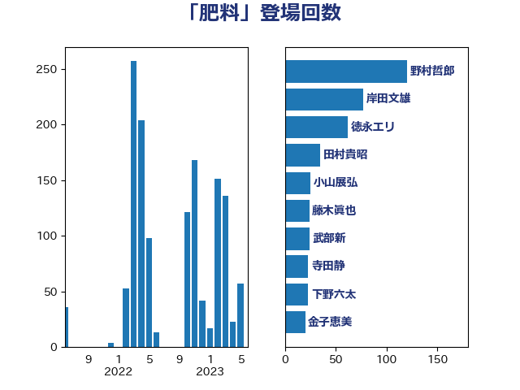

単語「肥料」

| 野村哲郎 | 自由民主党 | 120 回 |
| 岸田文雄 | 自由民主党 | 77 回 |
| 徳永エリ | 立憲民主党 | 62 回 |
| 田村貴昭 | 日本共産党 | 35 回 |
| 小山展弘 | 立憲民主党 | 25 回 |
| 藤木眞也 | 自由民主党 | 24 回 |
| 武部新 | 自由民主党 | 24 回 |
| 寺田静 | 無所属 | 23 回 |
| 下野六太 | 公明党 | 23 回 |
| 金子恵美 | 立憲民主党 | 20 回 |
| 宮崎雅夫 | 自由民主党 | 16 回 |
| 長友慎治 | 国民民主党 | 15 回 |
| 横沢高徳 | 立憲民主党 | 15 回 |
| おおつき紅葉 | 立憲民主党 | 13 回 |
| 石川香織 | 立憲民主党 | 12 回 |
| 石垣のりこ | 立憲民主党 | 12 回 |
| 川田龍平 | 立憲民主党 | 12 回 |
| 北神圭朗 | 無所属 | 12 回 |
| 高橋光男 | 公明党 | 11 回 |
| 若林健太 | 自由民主党 | 11 回 |
| 舟山康江 | 国民民主党 | 11 回 |
| 緑川貴士 | 立憲民主党 | 11 回 |
| 紙智子 | 日本共産党 | 11 回 |
| 梅村みずほ | 日本維新の会 | 11 回 |
| 須藤元気 | 無所属 | 10 回 |
| 中村裕之 | 自由民主党 | 10 回 |
| 葉梨康弘 | 自由民主党 | 9 回 |
| 簗和生 | 自由民主党 | 9 回 |
| 日下正喜 | 公明党 | 9 回 |
| 斉藤鉄夫 | 公明党 | 9 回 |
| 伊藤孝江 | 公明党 | 9 回 |
| 田名部匡代 | 立憲民主党 | 8 回 |
| 野間健 | 立憲民主党 | 7 回 |
| 稲津久 | 公明党 | 7 回 |
| 水岡俊一 | 立憲民主党 | 7 回 |
| 庄子賢一 | 公明党 | 7 回 |
| 奥野総一郎 | 立憲民主党 | 7 回 |
| 加藤明良 | 自由民主党 | 7 回 |
| 五十嵐清 | 自由民主党 | 7 回 |
| 穀田恵二 | 日本共産党 | 6 回 |
| 神谷裕 | 立憲民主党 | 6 回 |
| 大岡敏孝 | 自由民主党 | 6 回 |
| 加藤竜祥 | 自由民主党 | 6 回 |
| 鈴木俊一 | 自由民主党 | 5 回 |
| 谷合正明 | 公明党 | 5 回 |
| 角田秀穂 | 公明党 | 5 回 |
| 池畑浩太朗 | 日本維新の会 | 5 回 |
| 堤かなめ | 立憲民主党 | 5 回 |
| 竹詰仁 | 国民民主党 | 4 回 |
| 横山信一 | 公明党 | 4 回 |
| 小池晃 | 日本共産党 | 4 回 |
| 高市早苗 | 自由民主党 | 3 回 |
| 金城泰邦 | 公明党 | 3 回 |
| 野中厚 | 自由民主党 | 3 回 |
| 西野太亮 | 自由民主党 | 3 回 |
| 藤岡隆雄 | 立憲民主党 | 3 回 |
| 渡辺創 | 立憲民主党 | 3 回 |
| 後藤祐一 | 立憲民主党 | 3 回 |
| 山田勝彦 | 立憲民主党 | 3 回 |
| 小寺裕雄 | 自由民主党 | 3 回 |
| 大島敦 | 立憲民主党 | 3 回 |
| 勝俣孝明 | 自由民主党 | 3 回 |
| 仁木博文 | 無所属 | 3 回 |
| 串田誠一 | 日本維新の会 | 3 回 |
| 高見康裕 | 自由民主党 | 2 回 |
| 高村正大 | 自由民主党 | 2 回 |
| 高木かおり | 日本維新の会 | 2 回 |
| 船橋利実 | 自由民主党 | 2 回 |
| 空本誠喜 | 日本維新の会 | 2 回 |
| 福島伸享 | 無所属 | 2 回 |
| 石井正弘 | 自由民主党 | 2 回 |
| 石井啓一 | 公明党 | 2 回 |
| 泉健太 | 立憲民主党 | 2 回 |
| 江藤拓 | 自由民主党 | 2 回 |
| 梅谷守 | 立憲民主党 | 2 回 |
| 平沼正二郎 | 自由民主党 | 2 回 |
| 岩渕友 | 日本共産党 | 2 回 |
| 山崎正恭 | 公明党 | 2 回 |
| 尾崎正直 | 自由民主党 | 2 回 |
| 小泉進次郎 | 自由民主党 | 2 回 |
| 小林鷹之 | 自由民主党 | 2 回 |
| 堂故茂 | 自由民主党 | 2 回 |
| 和田有一朗 | 日本維新の会 | 2 回 |
| 中曽根康隆 | 自由民主党 | 2 回 |
| 中川郁子 | 自由民主党 | 2 回 |
| 高橋千鶴子 | 日本共産党 | 1 回 |
| 高橋はるみ | 自由民主党 | 1 回 |
| 階猛 | 立憲民主党 | 1 回 |
| 長妻昭 | 立憲民主党 | 1 回 |
| 鈴木義弘 | 国民民主党 | 1 回 |
| 道下大樹 | 立憲民主党 | 1 回 |
| 萩生田光一 | 自由民主党 | 1 回 |
| 荒井優 | 立憲民主党 | 1 回 |
| 若林洋平 | 自由民主党 | 1 回 |
| 若宮健嗣 | 自由民主党 | 1 回 |
| 芳賀道也 | 国民民主党 | 1 回 |
| 羽田次郎 | 立憲民主党 | 1 回 |
| 緒方林太郎 | 無所属 | 1 回 |
| 篠原孝 | 立憲民主党 | 1 回 |
| 笹川博義 | 自由民主党 | 1 回 |
| 竹内譲 | 公明党 | 1 回 |
| 石井拓 | 自由民主党 | 1 回 |
| 矢倉克夫 | 公明党 | 1 回 |
| 田村智子 | 日本共産党 | 1 回 |
| 田中健 | 国民民主党 | 1 回 |
| 片山さつき | 自由民主党 | 1 回 |
| 渡辺孝一 | 自由民主党 | 1 回 |
| 清水貴之 | 日本維新の会 | 1 回 |
| 浅野哲 | 国民民主党 | 1 回 |
| 森田俊和 | 立憲民主党 | 1 回 |
| 柴田巧 | 日本維新の会 | 1 回 |
| 林芳正 | 自由民主党 | 1 回 |
| 松山政司 | 自由民主党 | 1 回 |
| 東国幹 | 自由民主党 | 1 回 |
| 末松義規 | 立憲民主党 | 1 回 |
| 斎藤洋明 | 自由民主党 | 1 回 |
| 斎藤アレックス | 国民民主党 | 1 回 |
| 後藤茂之 | 自由民主党 | 1 回 |
| 平山佐知子 | 無所属 | 1 回 |
| 市村浩一郎 | 日本維新の会 | 1 回 |
| 山際大志郎 | 自由民主党 | 1 回 |
| 山本順三 | 自由民主党 | 1 回 |
| 山口那津男 | 公明党 | 1 回 |
| 山口晋 | 自由民主党 | 1 回 |
| 山口壯 | 自由民主党 | 1 回 |
| 宮路拓馬 | 自由民主党 | 1 回 |
| 宮本徹 | 日本共産党 | 1 回 |
| 安江伸夫 | 公明党 | 1 回 |
| 大西健介 | 立憲民主党 | 1 回 |
| 大椿ゆうこ | 立憲民主党 | 1 回 |
| 大串博志 | 立憲民主党 | 1 回 |
| 堀井学 | 自由民主党 | 1 回 |
| 吉田宣弘 | 公明党 | 1 回 |
| 古賀之士 | 立憲民主党 | 1 回 |
| 古川禎久 | 自由民主党 | 1 回 |
| 佐藤英道 | 公明党 | 1 回 |
| 住吉寛紀 | 日本維新の会 | 1 回 |
| 今枝宗一郎 | 自由民主党 | 1 回 |
| 上田英俊 | 自由民主党 | 1 回 |
| 上月良祐 | 自由民主党 | 1 回 |